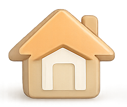
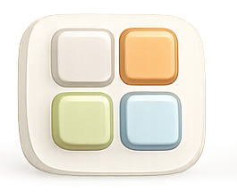
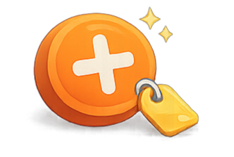
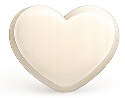
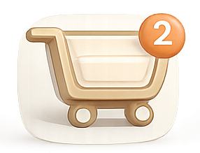

<ion-tabs>
  <ion-tab-bar slot="bottom">

    <ion-tab-button tab="home" href="/tabs/home">
      
    </ion-tab-button>

    <ion-tab-button tab="category" href="/tabs/category">
      
    </ion-tab-button>

    <ion-tab-button tab="add" href="/tabs/add">
      
    </ion-tab-button>

    <ion-tab-button tab="favorite" href="/tabs/favorite">
      
    </ion-tab-button>
    <ion-tab-button tab="cart" href="/tabs/cart">
      
    </ion-tab-button>
  </ion-tab-bar>
</ion-tabs>